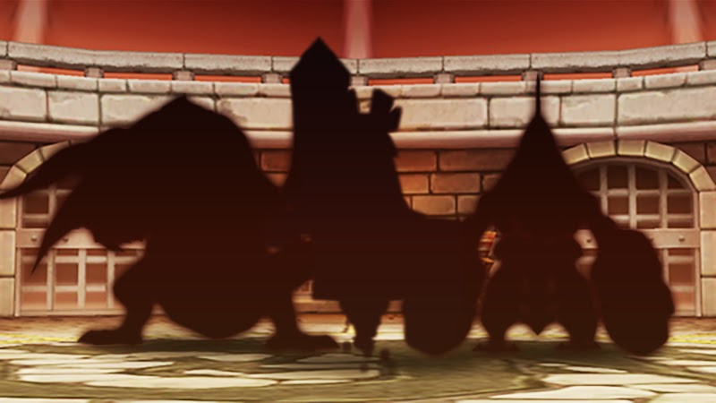
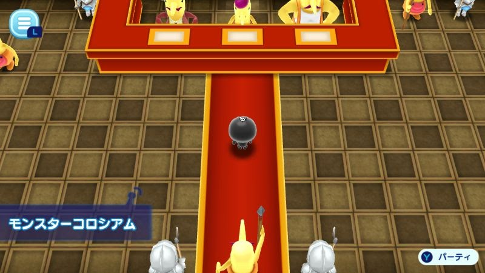
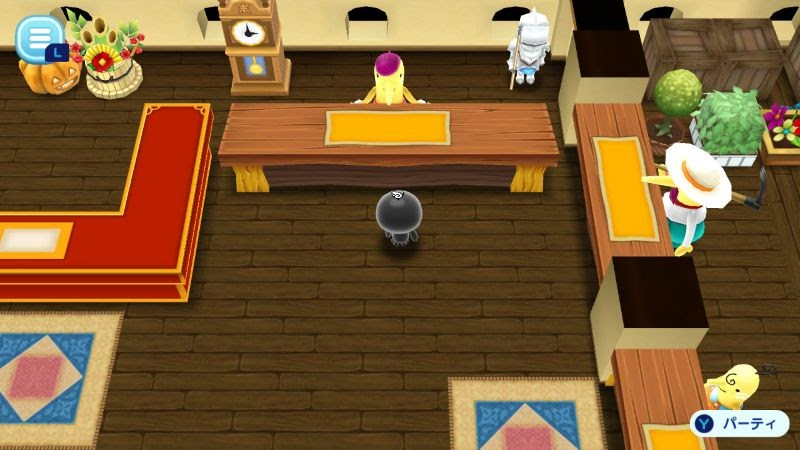

モンスターコロシアム
新イベント モンスターコロシアム開催！
3月17日より１週間、新イベントステージ「モンスターコロシアム」を開催します。 挑戦できるのは１日10回まで、１回につきスタミナが２必要になります。
モンスターコロシアムとは
モンスターコロシアムはボスモンスターとバトルをして、どこまでランクを勝ち上がれるか挑戦するステージとなります。 バトルに勝利するごとに、対戦相手のモンスターは強くなっていきます。
同じランクで３回以上勝つとランクアップし、翌日には次のランクの新しいモンスターが登場します。 ランクアップした後も再挑戦できますが、その日は同じモンスターとしか戦えません。
バトルでは決められたターン以内でモンスターを倒せなければ失格となってしまいます。 コンティニューはできないのでご注意ください。
ブーストアイテムは使用可能です。 レンタルNPCもつれてこれますが、モンスターはあかし以外のアイテムを落としません。 アイテムドロップ率を上げるNPCは効果がないためご注意ください。
モンスターコロシアムのバトルに勝利すると、チップを入手できます。 チップにはブロンズ、シルバー、ゴールドの3種類あり、ゴールドが一番手に入りにくいものとなります。
ランクが高くなるほどモンスターが手強くなりますが、レアなチップも手に入れやすくなります。 コロシアムで勝ち上がって、高ランクの強敵に挑みましょう！
集めたチップは島のショップ内にある「イベントチップ交換所」で特別なアイテムと交換できますよ。 イベントチップとアイテムの交換は、イベント開催期間外でも可能です。
ショップのラインナップはイベントと連動して定期的に更新されます。 更新のタイミングはイベントチップ交換所画面に表示されている日数をご確認ください。
3月17日より１週間、新イベントステージ「モンスターコロシアム」を開催します。 挑戦できるのは１日10回まで、１回につきスタミナが２必要になります。
モンスターコロシアムとは
モンスターコロシアムはボスモンスターとバトルをして、どこまでランクを勝ち上がれるか挑戦するステージとなります。 バトルに勝利するごとに、対戦相手のモンスターは強くなっていきます。
同じランクで３回以上勝つとランクアップし、翌日には次のランクの新しいモンスターが登場します。 ランクアップした後も再挑戦できますが、その日は同じモンスターとしか戦えません。
バトルでは決められたターン以内でモンスターを倒せなければ失格となってしまいます。 コンティニューはできないのでご注意ください。
ブーストアイテムは使用可能です。 レンタルNPCもつれてこれますが、モンスターはあかし以外のアイテムを落としません。 アイテムドロップ率を上げるNPCは効果がないためご注意ください。
モンスターコロシアムのバトルに勝利すると、チップを入手できます。 チップにはブロンズ、シルバー、ゴールドの3種類あり、ゴールドが一番手に入りにくいものとなります。
ランクが高くなるほどモンスターが手強くなりますが、レアなチップも手に入れやすくなります。 コロシアムで勝ち上がって、高ランクの強敵に挑みましょう！
集めたチップは島のショップ内にある「イベントチップ交換所」で特別なアイテムと交換できますよ。 イベントチップとアイテムの交換は、イベント開催期間外でも可能です。
ショップのラインナップはイベントと連動して定期的に更新されます。 更新のタイミングはイベントチップ交換所画面に表示されている日数をご確認ください。




【イベント期間】
3月17日 15:00 ～ 3月24日 14:59
ぜひ、お楽しみください！